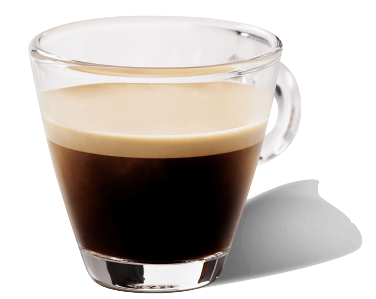
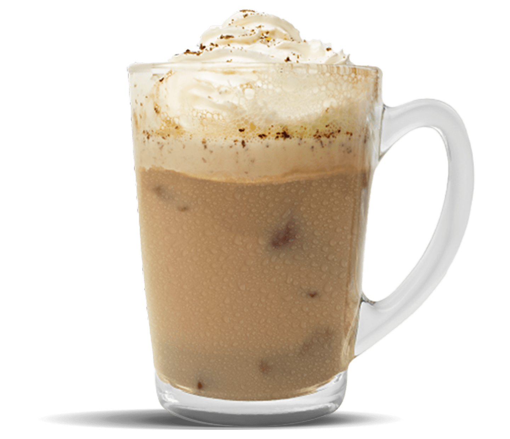

Preparación
Espresso
Espresso
Ingredientes
- Café molido
- Agua caliente
Instrucciones
- Poner café molido en la cafetera.
- Agregar agua caliente al café.
- Esperar unos segundos y servir.

Cappuccino
Cappuccino
Ingredientes
- 1 shot de espresso
- 1/3 taza de leche caliente
- 1/3 taza de espuma de leche
- Azúcar al gusto (opcional)
Instrucciones
- Prepara un shot de espresso en una taza.
- Calienta la leche hasta que esté caliente pero no hirviendo.
- Usa una máquina de espuma o un vaporizador de leche para crear espuma de leche.
- Vierte la leche caliente en la taza con el espresso.
- Agrega la espuma de leche por encima.
- Sirve caliente y, si lo deseas, endulza con azúcar al gusto.

Frappe
Frappe
Ingredientes
- 1 taza de café frío
- 1/2 taza de leche
- 2 cucharadas de azúcar (ajusta al gusto)
- 2 tazas de hielo picado
- Crema batida (opcional)
- Chocolate rallado o cacao en polvo (opcional)
Instrucciones
- En una licuadora, combina el café frío, la leche, el azúcar y el hielo picado.
- Mezcla todo hasta que la mezcla esté suave y el hielo esté completamente triturado.
- Sirve el Frappé en un vaso alto.
- Si lo deseas, decora con crema batida y espolvorea chocolate rallado o cacao en polvo por encima.
- Sirve frío y disfruta.
